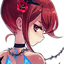

|
 |
Naofumi Iwatani |
Nothing to harvest here, huh? Guess it's time to move on... |
| Melty Q Melromarc |
Naofumi! |
Naofumi Iwatani |
Melty! |
| Melty Q Melromarc |
Excuse me, Naofumi! Why did you call me a "pompous girl"?! |
| Melty Q Melromarc |
I appreciate you trying to look for me, but don't describe me in such strange ways! |
Naofumi Iwatani |
Geez... That's how you're greeting me after not seeing me for so long? I've been worried and looking all over for you... |
| Melty Q Melromarc |
Oh... |
| Melty Q Melromarc |
Th-thank you... I'm glad that you're okay... |
Naofumi Iwatani |
Anyway, more importantly... |
Naofumi Iwatani |
Are you the Phantom Soldiers that the kid who was speaking strangely was talking about? |
| Melty Q Melromarc |
Huh?! You know about them, Naofumi? |
Naofumi Iwatani |
Yeah... |
Naofumi Iwatani |
...So, what do I need to do? |
| Ouroboros |
An entanglement has formed between this world and yours, and one of the Waves that causes calamities in your world has made their way into ours. |
| Ouroboros |
We ask for your help in suppressing it. The Wave is an unprecedented disaster to our world. It will cause exponential damage if left unchecked. |
| Ouroboros |
We won't be able to get rid of the Wave without the help of the Heroes. That is why I called you here. You are one of the heroes who fights against the Waves, correct? |
Naofumi Iwatani |
Well, yes... |
| Ouroboros |
I have also called your companions here to fight at your side. You have all been summoned to different locations... I ask that you reconvene with them and get rid of the Wave. |
| Ouroboros |
I vow to safely return you all home once the Wave has been suppressed. |
Naofumi Iwatani |
(Why does everyone summon me to places without realizing how much of an inconvenience it is for me...) |
Naofumi Iwatani |
If you need a Hero, you could've summoned any of the other three instead. Why did you pick me? |
Naofumi Iwatani |
I don't know why you had to summon the most hated hero... Makes me feel like you're up to something. |
| Ouroboros |
I was completely unaware of the circumstances of your world... I merely observed your world to see who was successful in their fights with the Waves and called them here. |
| Ouroboros |
They just happened to be you and your companions. |
Naofumi Iwatani |
... |
| Ouroboros |
However, you must feel somewhat bereft without your companions. I shall have a Phantom Soldier accompany you as reinforcement. |
Naofumi Iwatani |
There's no need for that. |
| Ouroboros |
What? |
Naofumi Iwatani |
All I have to do is get rid of the Wave, right? Just let me take care of it the way I want to. |
Naofumi Iwatani |
I can't trust you or those Phantom Soldiers... There's no way I'll be able to team up with people I can't fully depend on. |
| Ouroboros |
Hmph... As you wish. |
| Ouroboros |
What is it now? |
| Ouroboros |
Hm? Are those the monsters from the other world? They're all grouping together in an unusual manner... Hm. |

Ryle |
So that's why we were sent to fight that huge mob of Balloons... Talk about working us to the bone... |
| Melty Q Melromarc |
That means we'll be able to return to our world if we suppress the Wave! |
Naofumi Iwatani |
Yeah, if we believe what that woman was saying. |
| Melty Q Melromarc |
Thank goodness! |
| Melty Q Melromarc |
In that case, we should look for Raphtalia and Filo right away so that we can prepare for our battle against the Wave! |
| Melty Q Melromarc |
Let's work together to overcome this world's Wave! How about it, everyone? |

Anastasia |
Yes, I'm ready. |
Naofumi Iwatani |
I'll have to pass... |
| Melty Q Melromarc |
What? Why?! |
Naofumi Iwatani |
I don't mind dealing with the Wave, since it's supposed to be my job as a Hero, no matter how much people despise me. |
Naofumi Iwatani |
But I'm not about to start fighting together with people I barely even know. Who knows when they'll stab me in the back? |
| Melty Q Melromarc |
These people won't betray us! I truly believe that they just want to protect their home... |
| Melty Q Melromarc |
They even saved me from the Balloons. They've been nothing but kind to me... I know that they're not bad people! |
Naofumi Iwatani |
I wonder... |
Naofumi Iwatani |
Those who only pretend to befriend others in order to get close to them are worse than trash. Just like how that sister of yours flung those false accusations on me. |
| Melty Q Melromarc |
M-my sister has nothing to do with our current situation! Why are you always so hardheaded?! Do you not believe me?! |
Naofumi Iwatani |
That's not what I... Ah! |
| Melty Q Melromarc |
Eeek... |

Lamia |
There's more of these things? |
Naofumi Iwatani |
Tch... Here they come! |